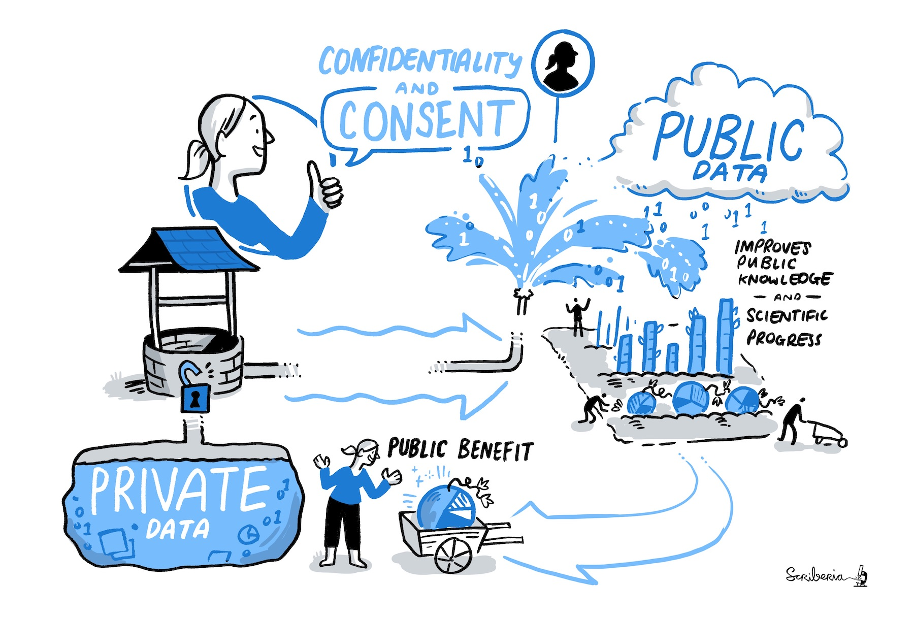
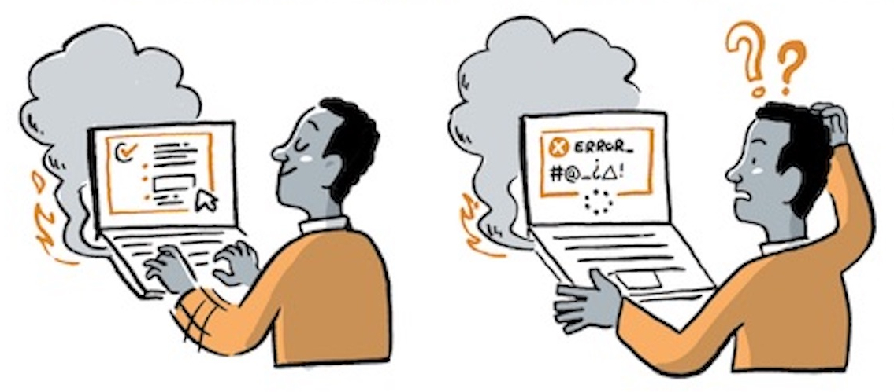

Building a Secure and Productive TRE: How I Learned to Stop Worrying and Proxy PyPI
Jim Madge
Alan Turing Institute
Why sensitive data?

Data Ecosystem by Scriberia. Used under CC-BY 4.0 10.5281/zenodo.8169292
Why TREs?
 Sensitive Data by Scriberia. Used under CC-BY 4.0 10.5281/zenodo.8169292
Sensitive Data by Scriberia. Used under CC-BY 4.0 10.5281/zenodo.8169292
Data Safe Haven
What is real security?
Trusted research wisdom
Enabling researchers
Genesis

Error Management by Scriberia, modified. Used under CC-BY 4.0 10.5281/zenodo.8169292
Our aim
To create an environment we could use for world class data science.
To balance security with productivity.
To remove barriers to working safely and effectively with sensitive data,
by promoting and demonstrating a culture of open, community-led development
of interoperable foundational infrastructure and governance.
A TRE implementation
pypi.org/project/data-safe-haven
 Data Safe Haven by Scriberia. Used under CC-BY 4.0 10.5281/zenodo.8169292
Data Safe Haven by Scriberia. Used under CC-BY 4.0 10.5281/zenodo.8169292
An open research project
 Share Work by Scriberia. Used under CC-BY 4.0 10.5281/zenodo.8169292
Share Work by Scriberia. Used under CC-BY 4.0 10.5281/zenodo.8169292
A production deployment
alan-turing-institute.github.io/trusted-research
 Academic-Industry Partnership by Scriberia. Used under CC-BY 4.0 10.5281/zenodo.8169292
Academic-Industry Partnership by Scriberia. Used under CC-BY 4.0 10.5281/zenodo.8169292
Data Safe Haven
What is real security?
Trusted research wisdom
Enabling researchers
Security maximalism
 Code Review Directions by Scriberia. Used under CC-BY 4.0 10.5281/zenodo.8169292
Code Review Directions by Scriberia. Used under CC-BY 4.0 10.5281/zenodo.8169292
In reality
 Open vs Closed Research by Scriberia. Used under CC-BY 4.0 10.5281/zenodo.8169292
Open vs Closed Research by Scriberia. Used under CC-BY 4.0 10.5281/zenodo.8169292
Data Safe Haven
What is real security?
Trusted research wisdom
Enabling researchers
One size does not fit all
No single security configuration for all work
One configuration = the most strict
In DSH
Set of security tiers with technical and policy controls
Vulnerability is not the same in a TRE
Even malicious code may not be a significant risk
Should be robust to privilege escalation and bad actors
In DSH
Data flow is restricted at the infrastructure level
Allow packages from CRAN and PyPI
Egress is more dangerous than ingress
New data can elevate risk
Top priority: prevent unapproved data egress
In DSH
Moving towards easier data ingress routes
Plan ahead
Outputs must be checked
No outputs means wasted time/money
In DSH
Work package classification
Certifications are not security
Certifications don't make a system a TRE
May distract from what is important
Technical controls are not sufficient
Technical solutions for a people problem
There is no technology to prevent disclosure
In DSH
Technical controls in combination with policy
User training
Communication solves problems
Data owners can have a skewed impression of risk
If you run a TRE, you are an expert
In DSH
Explain the trade off between security and productivity
Aim to find a good balance
Data Safe Haven
What is real security?
Trusted research wisdom
Enabling researchers
Batteries included workspace
PyPI and CRAN proxy
github.com/alan-turing-institute/nexus-allowlist

Develop outside, run inside
 Code Publication by Scriberia. Used under CC-BY 4.0 10.5281/zenodo.8169292
Code Publication by Scriberia. Used under CC-BY 4.0 10.5281/zenodo.8169292
Develop outside, run inside

Acknowledgements
All team members and contributors